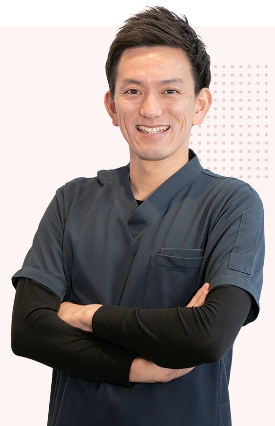
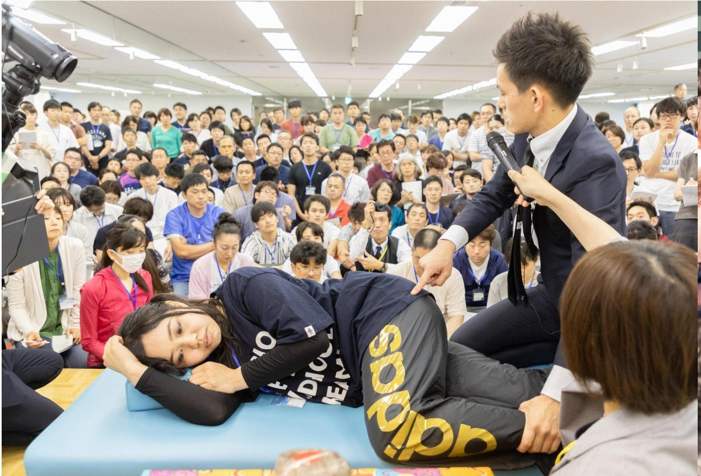
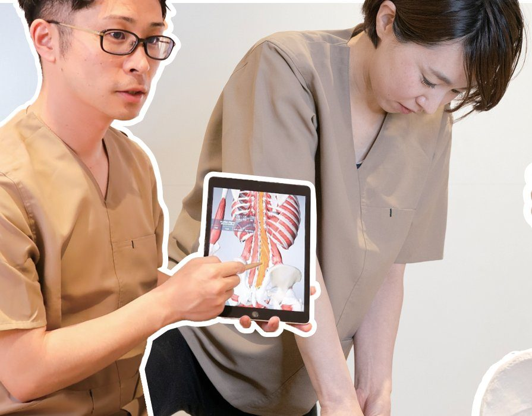
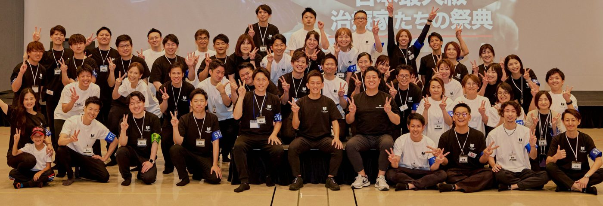
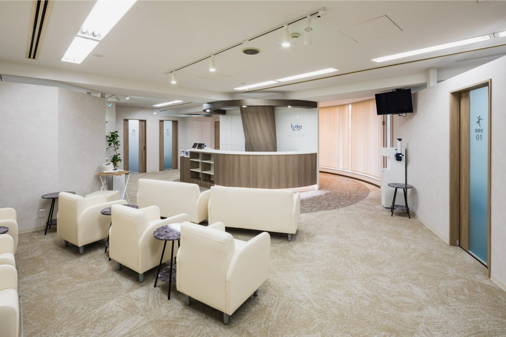
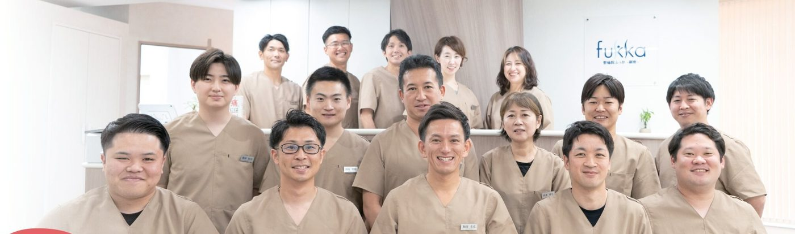

起「その手術、本当に必要？」手術を迷う患者が全国から訪れる。MRI画像を前にした松田の真剣なまなざし。
承原点──「治せない」現実病院の理学療法士として見た対処療法の限界。自費で独立した決断。
転東京駅前で“体系化”に挑む医師と組み、検査から運動療法までを一つに。立ちはだかる業界の壁。
結世界へ、そして家族へ国際会議の壇上と、4人の子の父の素顔。「痛みの第一選択」の先へ。
慢性痛への手術のエビデンスは「C＝低い」（国の診療ガイドライン）。
最も推奨される運動療法・認知行動療法を日本で唯一※体系的に実施し、
いま東京駅前で“痛みの最先端治療”の体系化に挑む男がいる。

病院の理学療法士として7年間、臨床の最前線へ。そこで見たのは、エビデンスの低い手術や薬に頼る“対処療法”の限界だった。本当に効果が示されている運動療法は、病院ではほとんど受けられない。痛みを抱えた人が「どこに行けばいいかわからない」まま、根本から良くならない。
一方、世界を旅する中で知った日本の医療の誠実さとホスピタリティ。「Made in Japanの“安心・安全”な医療で、世界と戦える会社をつくる」──それが原点にある。



| 治療法 | 推奨度 | エビデンスの強さ | 主に行う場所 |
|---|---|---|---|
| 運動療法 | 1-B | 中 | ふっか |
| 認知行動療法 | 2-B | 中 | ふっか |
| 薬物療法 | 2-B長期は避ける | 中 | 病院 |
| 手術療法 | 2-C | 低い | 病院 |
推奨度 1＝強く推奨／2＝弱く推奨（提案） エビデンス A高い／B中／C低い／D非常に低い

MRI画像を前に原因を説明し、運動療法で患者が自分の足で歩き出す瞬間。
4,000人の治療家を率いる学長の顔。技術を独占せず「誰でも結果が出る」形で手渡す。

2027年開院予定。医師と理学療法士が組む前例のない挑戦と仲間たちの日々。